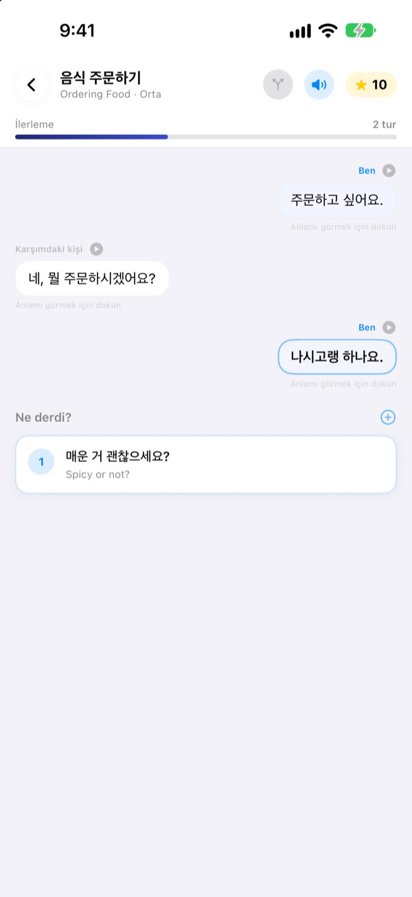
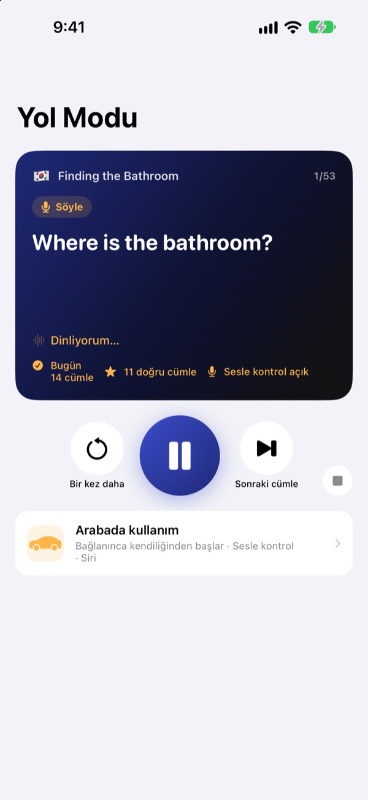
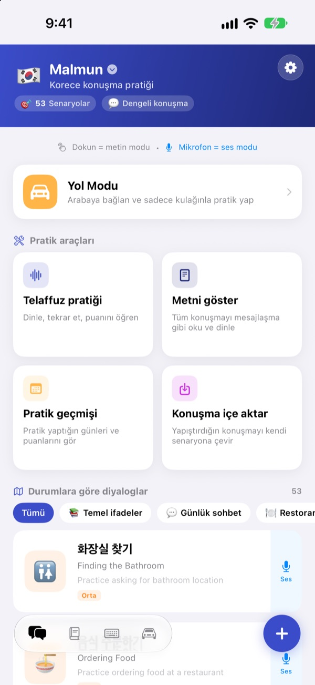
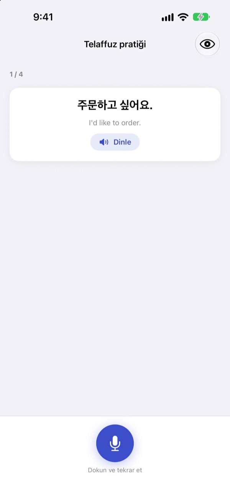

Donup kalmaya son.
İlk sen konuş.
Malmun, seçtiğin her cevabın diyaloğu farklı bir yöne götürdüğü bir konuşma antrenörü. Korece, Japonca, Çince, İspanyolca veya Endonezce öğren, arabada da sadece kulağınla ve sesinle pratik yap.
Dallanan diyaloglar, telaffuz pratiği ve kelime listesi ücretsiz.

Konuşmayı sen sürdür
Bu, uygulamadaki Endonezce “Günaydın” diyaloğu. Seçtiğin her cümle sohbeti başka bir yöne çeviriyor.
Cümleyi ezberledin ama cevap gelmedi mi?
Ders kitabında diyaloglar hep senaryoya göre ilerler. Gerçek hayatta karşındaki hiç beklemediğin bir şey söyler. Malmun bir konuşmanın tüm dallarını önceden gezmeni sağlar, böylece ne gelirse gelsin sıradaki cümlen hazır olur. Eve dönüş yolu bile pratik zamanına dönüşür.
Araba kullanırken kulakla pratik
Yol Modu, Bluetooth veya CarPlay ile arabanın hoparlörlerinden çalar. Önce anlamı duyarsın, bir sinyal sesi sana söyleme süresi verir, sonra cevap bir kez yavaş, bir kez normal hızda çalar.
Direksiyon tuşlarıyla ilerle ve tekrar dinle, ya da sıra sendeyken next, again veya slower de. Navigasyon konuştuğunda kısa bir ara verir.

Seyahatin ve gündelik hayatın tüm durumları
Her dilde 53 durum diyaloğu var: temel ifadeler, gündelik sohbet, restoran, ulaşım, havalimanı, otel, alışveriş, gezi ve acil durumlar.
Endonezce öğrenenler için daha fazlası var: elle yazılmış 5 sohbet senaryosu, haftalık programıyla 6’şar sahnelik 3 günlük kurs ve iş seyahati için 100 kelime.

Doğru söyleyip söylemediğini gör
Telaffuz pratiği sana puan verir, doğru söylediğin ve kaçırdığın kelimeleri renkle gösterir.
Metin görünümünde tüm diyalog bir sohbet gibi açılır. Baştan sona dinle ya da anlamları gizleyip kendini dene.

Üç adımda başla
- 1
Bir dil seç
Ana ekranın en üstündeki bayrağa dokun. İfadelerin ve kelimelerin her dil için ayrı saklanır.
- 2
Bir diyalog aç
Metin modunda cevaplara dokun, ya da mikrofona dokunup konuş: ses modu en yakın cevabı bulur.
- 3
Arabada Yol Modu
iPhone’u arabaya bağla ve oynat’a bas. Ekrana bakmana gerek yok.
Yol Modu kontrolleri
- Direksiyon: sonraki parça
- Sonraki cümle
- Direksiyon: önceki parça
- Aynı cümle bir kez daha
- Oynat tuşu
- Duraklat ve devam et
next·skip- Sonraki cümle
again·repeat- Tekrar dinle
slower·faster- Okuma hızını değiştir
next scene- Sonraki diyaloğa geç
stop·pause- Pratiği bitir
- Siri: “Malmun ile yol pratiğini başlat”
- Telefona dokunmadan başla
Uygulama Türkçe olduğunda sesli komutları İngilizce söylersin. Komutlar yalnızca sinyal sesinden sonra sıra sendeyken dinlenir. Çalan cümle arabanın oynatma bilgisinde görünür. CarPlay’de ayrı bir uygulama ekranı yoktur.
Neredeyse her şey ücretsiz. Malmun Pro gerisini açar.
Ücretsiz
- Dallanan sohbetler ve günlük kurslar (Endonezce)
- Durum diyalogları: temel ifadeler ve gündelik sohbet
- Yol Modu, günde 3 sahne
- Telaffuz, metin görünümü, diyalog içe aktarma, pratik geçmişi
- İfadelerim, kelime kartları, ifade klavyesi
- Arkadaşlarla senaryo paylaşma, yapay zekâyla senaryo oluşturma
Malmun Pro
- Tüm durum diyalogları: restoran, ulaşım, havalimanı, otel, alışveriş, gezi, acil durumlar
- Sınırsız Yol Modu
- Tüm diller için geçerli
Yıllık abonelik ya da tek seferlik ömür boyu satın alma
Fiyatları uygulamada ve App Store’da görebilirsin. Yıllık abonelik, dönem bitmeden en az 24 saat önce iptal edilmezse otomatik olarak yenilenir.
Sık sorulan sorular
Hangi dilleri öğrenebilirim?
Korece, Japonca, Çince, İspanyolca ve Endonezce. Düğmeler ve menüler Türkçedir ama cümlelerin anlamları ve sesli komutlar İngilizcedir. Bu yüzden İngilizcenin kendisi listede yer almaz.
Arabada nasıl kullanırım?
iPhone’u Bluetooth veya CarPlay ile arabaya bağla, Yol Modu’nu aç ve oynat’a bas. Ses arabanın hoparlörlerinden gelir, çalan cümle Şimdi Çalıyor’da görünür. Siri’ye “Malmun ile yol pratiğini başlat” da diyebilir ya da Kestirmeler uygulamasında bir kez otomasyon kurup CarPlay (veya arabanın Bluetooth’u) bağlanınca başlamasını sağlayabilirsin.
Mikrofon sürekli dinliyor mu?
Hayır. Yalnızca sinyal sesinden sonra sıra sendeyken iPhone mikrofonuyla dinler, duyduklarını cihazında işler.
Telaffuzum tanınmıyor.
Konuşma tanıma, öğrendiğin dilde çalışır. Daha sessiz bir yerde dene ve o dilin konuşma tanımasının cihazına indirilmiş olduğundan emin ol.
Klavyeyi nasıl eklerim?
Ayarlar ▸ Genel ▸ Klavye ▸ Klavyeler ▸ Yeni Klavye Ekle’ye gidip Malmun klavyesini seç. Yazarken dünya tuşuna dokunarak geçiş yap. Tam Erişim gerekmez. Daha az ifade göstermek için ana ekranın sağ altındaki klavye simgesine dokun ▸ Klavyeyi yönet.
Arkadaşımın paylaştığı senaryoyu göremiyorum.
Paylaşım iCloud üzerinden çalışır, bu yüzden ikinizin de iCloud’a giriş yapmış olması gerekir. Hâlâ görünmüyorsa uygulamayı tamamen kapatıp yeniden aç.
Yapay zekâyla senaryo oluşturmak için ne gerekir?
Kendi Anthropic API anahtarını uygulamaya gir ve bir konu yaz, yeni bir diyalog oluşturulur. Diğer her şey anahtar olmadan çalışır.
Aboneliği nasıl iptal ederim ya da iade alırım?
Ödemeleri Apple yönetir. İptal için iPhone’da Ayarlar ▸ Apple Hesabı ▸ Abonelikler ▸ Malmun. İade için reportaproblem.apple.com üzerinden Apple’a başvur.
Yeni iPhone aldım, Pro gitti.
Aynı Apple Hesabı ile giriş yap, sonra Malmun’da Ayarlar ▸ Malmun Pro ▸ Satın Alımları Geri Yükle’ye dokun.
İlerlemem nerede saklanıyor?
Hesap gerekmez. Verilerin cihazında ve kendi iCloud’unda kalır. Reklam ve takip yok, yalnızca anonim kullanım istatistikleri ve hata raporları gönderilir. Hataları ve isteklerini GitHub Issues’a (github.com/M1zz/IndonesianSmallTalk/issues) da yazabilirsin.
Soru ya da önerin mi var? leeo@kakao.com adresine yaz, uygulamada Ayarlar ▸ Geri bildirim gönder’i kullan ya da Instagram’dan @lee25_ios hesabına ulaş.